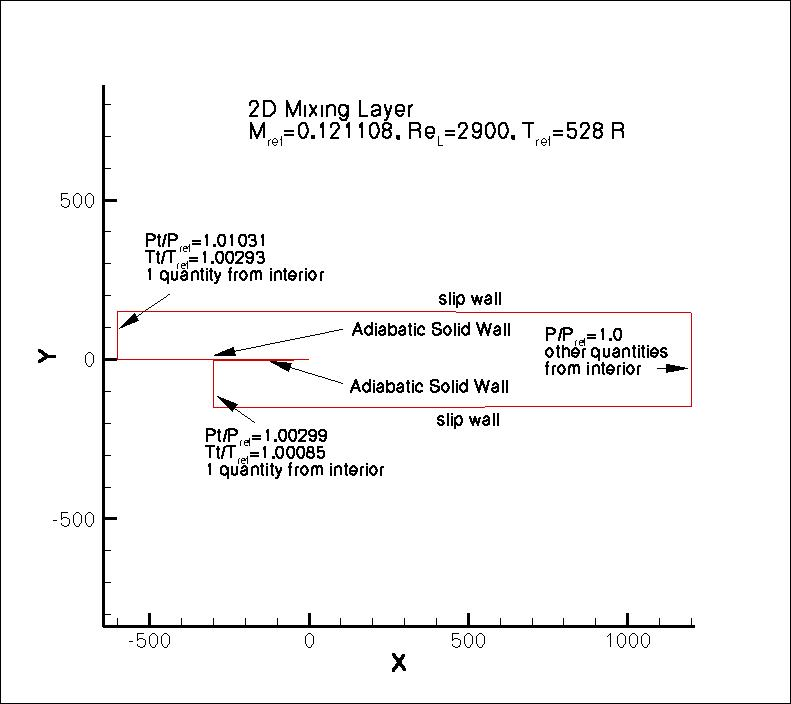
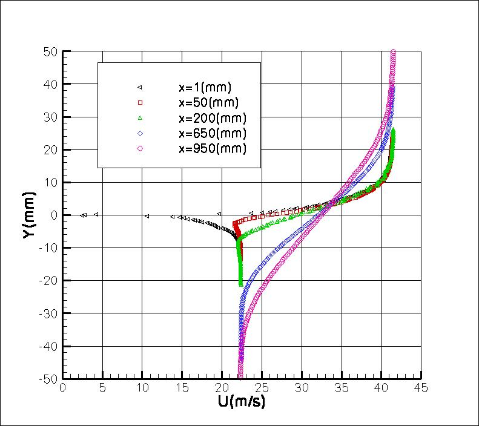
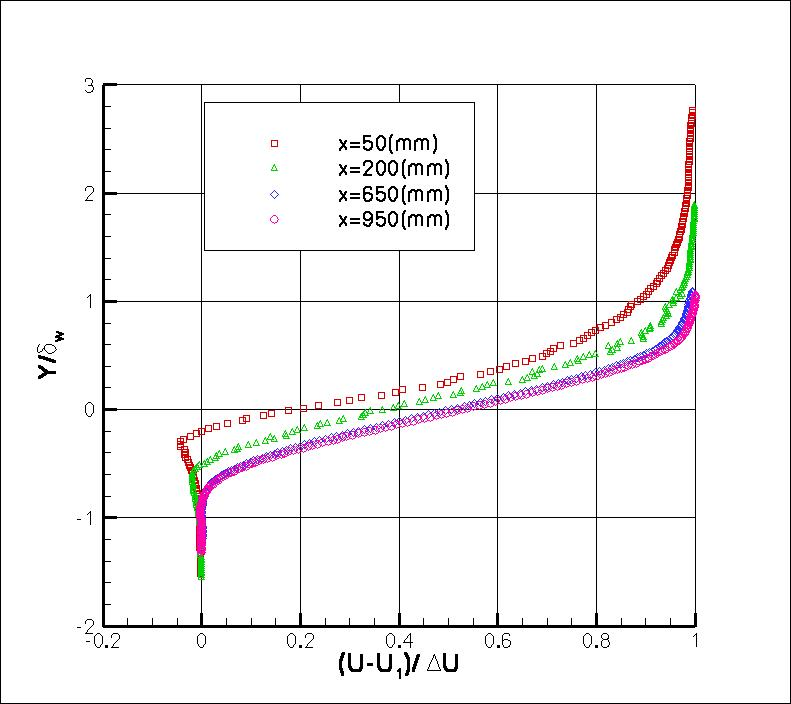
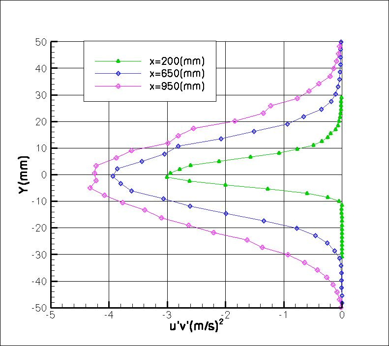
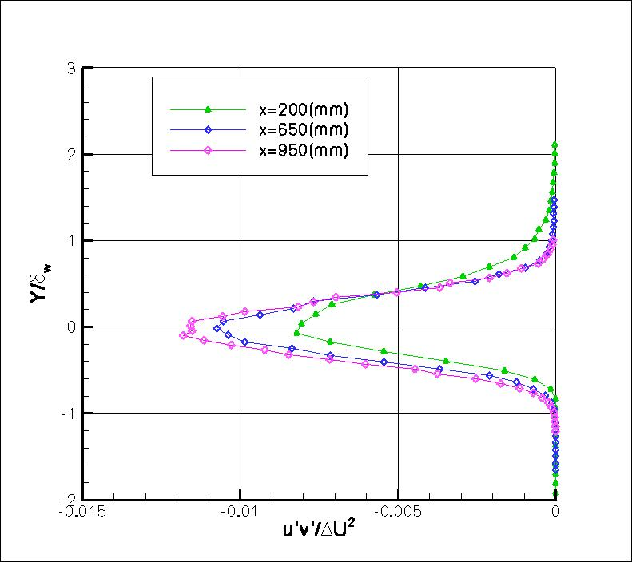

Public Access (formerly Langley Research Center)Turbulence Modeling Resource |
Return to: Turbulence Modeling Resource Home Page
2DML: 2D Mixing Layer Validation Case
The purpose here is to provide a
validation case for turbulence models. Unlike verification, which seeks to
establish that a model has been implemented correctly, validation compares
CFD results against data in an effort to establish a model's ability to
reproduce physics. A large sequence of nested grids of the same family are
provided here if desired. Data are also provided for comparison. For this
particular "essentially incompressible" mixing layer case (from Delville), the data are from experiments.
The experiment utilizes a splitter plate of thickness 3 mm in a tunnel 300 mm wide.
The end of the plate is located at x = 0, and the two streams of different velocity
fluid merge downstream of this location. The plate is modeled with a taper starting
at x = -50 mm, ending up with a trailing edge thickness of 0.3 mm at x = 0.
In the experiment, the upper higher-velocity stream has a boundary layer thickness at x=-10 mm (near
the plate trailing edge) of about 9.6 mm and a momentum thickness of about 1 mm.
The lower slower-velocity stream has a boundary layer thickness
of about 6.3 mm and a momentum thickness of about 0.73 mm.
The Reynolds number based on L (= 1 mm, which is length "1" of the grid) is 2900.
Reference temperature is Tref = 293 K = 528 R, and speed of sound aref = 343 m/s.
If needed, the reference static pressure pref is atmospheric (101325 Pa).
The freestream velocities are: 41.54 m/s upper and 22.40 m/s lower.
If applicable to the particular turbulence model being employed, this case should be run
with a low freestream turbulence level.
In the experiment, Tu was approximately 0.3%.
The upper and lower boundary layer thicknesses are approximated in the CFD by
providing different appropriate "run" lengths, and allowing the fully turbulent boundary layers
to develop naturally. Isentropic relations are used to obtain inflow boundary conditions
in terms of total pressure and total temperature. The upper
and lower boundaries are modeled as slip walls, and are contoured slightly
in order to yield close to zero streamwise pressure gradient downstream of x=0.
The following plot shows the layout of this case, along with the boundary conditions.
"Pt" refers to total pressure, "P" refers to
static pressure, and "Tt" refers to total temperature.

Some of the experimental data for this case will be shown below.
The profiles of interest are at x= 1, 50, 200, 650, and 950,
as well as x= -10 on the top and the bottom of the plate.
The experimental data reference is: Delville, J., Bellin, S., Garem, J. H., and Bonnet J. P., "Analysis of
Structures in a Turbulent, Plane Mixing Layer by Use of a Pseudo Flow Visualization Method Based on
Hot-Wire Anemometry," in: Advances in Turbulence 2, eds: H.-H. Fernholz and H. E. Fiedler,
Proceedings of the Second European Turbulence Conference, Berlin, Aug 30-Sept 2, 1988,
Springer Verlag, Berlin, 1989, pp. 251-256,
https://doi.org/10.1007/978-3-642-83822-4_38.
The experimental data are available from:
In the experiment, the upper and lower tunnel walls were
adjusted in order to attain as close to zero pressure gradient (ZPG)
as possible. The specific angle adjustments were not provided.
Because the experimental data in the merging region downstream of x=0 exhibited a
bias upward in its mid-shear position away from the y=0 tunnel centerline
position, the original experimental data's y-locations (in mm)
have been adjusted in all data provided on the current website by the following:
ycorrected = y - 0.00688x, where x is also in mm.


The single wire experimental data plotted above (with ycorrected) is provided in:
delville_exp_u.dat.
The second plot above shows normalized quantities for x=50, 200, 650, and 950.
It can be seen that the profiles at x=650 and 950 are approximately self-similar.
The vorticity thickness data from the experiment (used in the second plot) are given in:
delville_exp_delomega.dat.


The X wire experimental data plotted above (with ycorrected) is provided in:
delville_exp_turb.dat.
The first plot of the set shows u'v' (specific turbulent shear stress) for x=200, 650, and 950.
The second plot of the set shows the same quantities, but normalized.
The Y values are normalized by the vorticity thickness as above.
What to Expect:
(Other turbulence model results may be added in the future.)
Note that the OVERFLOW code has documented its results for this validation case (for the SA-noft2, SST, and SST-V
turbulence models) in NAS Technical Paper 2016-01 (pdf file)
(18.3 MB) by Jespersen, Pulliam, and Childs.
Return to: Turbulence Modeling Resource Home Page
Recent significant updates:
RESULTS
LINK TO EQUATIONS
MRR Level
SA
SA eqns
4
SSTm
SSTm eqns
3
SST-Vm
SST-Vm eqns
3
SSG/LRR-RSM-w2012
SSG/LRR-RSM-w2012 eqns
3
Wilcox2006-klim-m
Wilcox2006-klim-m eqns
2
K-kL-MEAH2015m
K-kL-MEAH2015m eqns
3
EASMko2003-S
EASMko2003-S eqns
1
08/28/2020 - changed SST-V naming to SST-Vm
04/25/2016 - included exp normal stresses in new file: delville_exp_turb.dat
Page Curators: Christopher Rumsey,
Ethan Vogel,
Clark Pederson
Last Updated: 11/12/2021